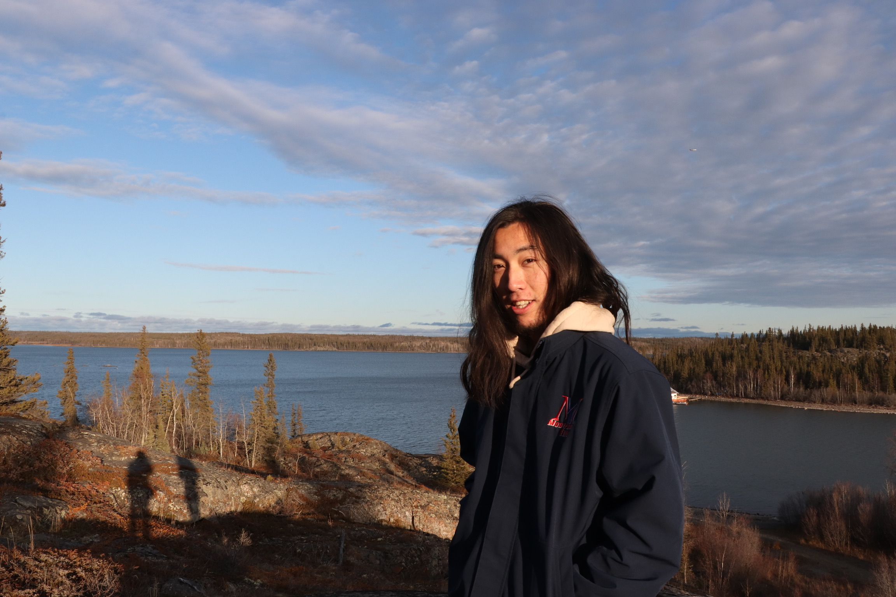

Takuya Sonoda

Summary
I'm a passionate, empathetic Web designer who strives to find solutions for people's problems by creating experiences that impact their life.
Work Experience
Business Administration -Meidensha Co.
Tokyo, Japan
April 2020 - August 2022
Skills
- Management Planning +2yr
- Management Accounting +2yr
- Human Resources +1yr 6mos
Education
- Bachelor of Laws, Legal Studies of the Global Environment - University of Sophia (2015-2020)
Others
Youtube
Instagram